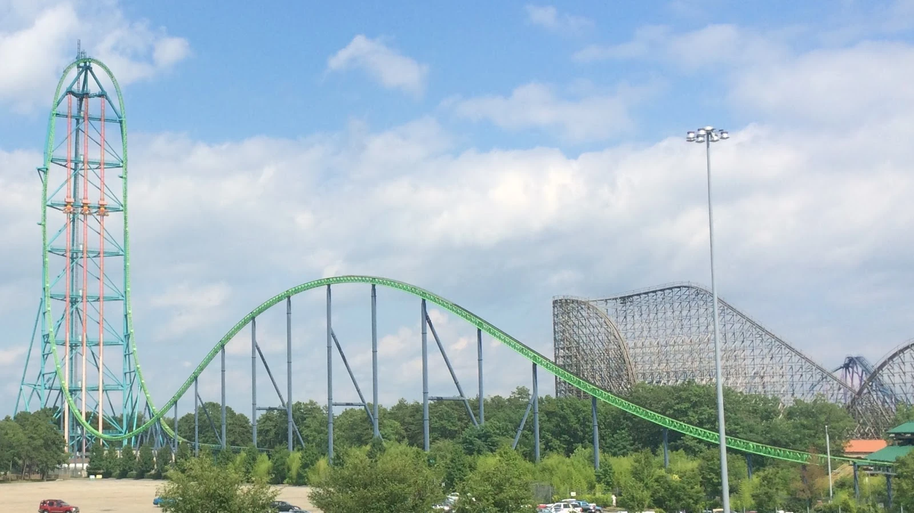

Kingda Ka was the tallest and fastest coaster when it opened overtaking Top Thrill Dragster. It went 128 mph in 3.5 seconds and was 456 feet tall. Although it wasn't the fastest coaster for all it's life span, with Formula Rossa breaking it's speed record in 2010, it was the tallest coaster for all the time it was open. But since it opend in 2005, it began to show it's age and with a outdated launch mechinsim being hydralics and the new Falcons Flight opening soon, which broke the tallest and fastest coasters records, Six Flags decided to close it in November 2024 whith it being demolished shortly after.
